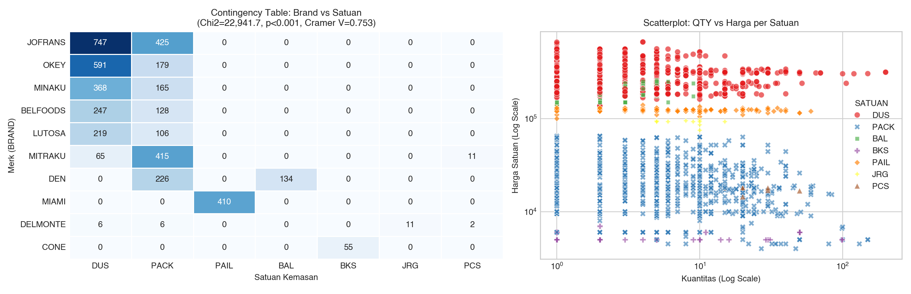
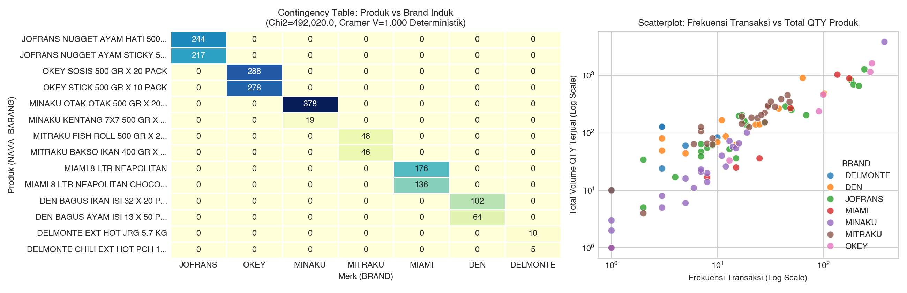
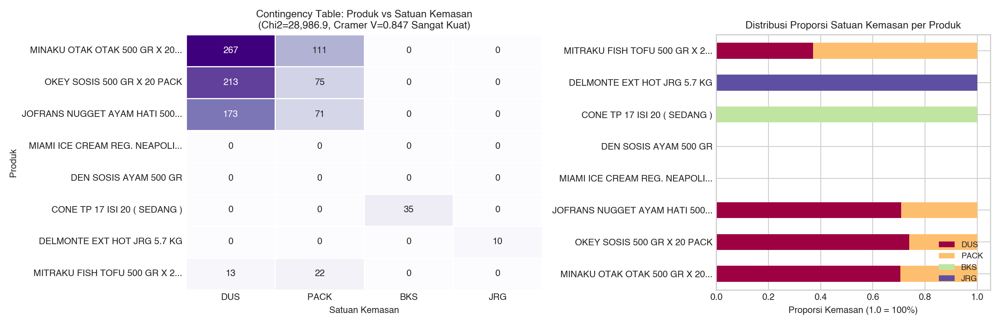
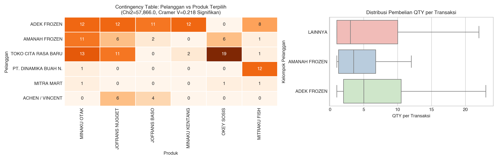

Analisis Asosiasi Multivariat & Pemodelan Regresi Nominal Penjualan Frozen Food (N = 6,740 Transaksi)
| Merk (BRAND) | DUS | PACK | PAIL | BAL | BKS | JRG | Total |
|---|---|---|---|---|---|---|---|
| JOFRANS | 747 (64%) | 425 (36%) | 0 | 0 | 0 | 0 | 1,172 |
| OKEY | 591 (77%) | 179 (23%) | 0 | 0 | 0 | 0 | 770 |
| MINAKU | 368 (69%) | 165 (31%) | 0 | 0 | 0 | 0 | 533 |
| MIAMI | 0 | 0 | 410 (100%) | 0 | 0 | 0 | 410 |
| DEN | 0 | 226 (63%) | 0 | 134 (37%) | 0 | 0 | 360 |
| DELMONTE | 6 (24%) | 6 (24%) | 0 | 0 | 0 | 11 (44%) | 25 |
Bukti Asosiasi: Terbukti signifikan secara statistik (Cramér's V = 0.7532, sangat kuat). Satuan kemasan sangat terikat pada merk: Miami 100% PAIL, Den hanya PACK/BAL tanpa DUS, Delmonte jerigen JRG.

| Produk (NAMA_BARANG) | JOFRANS | MINAKU | OKEY | MIAMI | DELMONTE |
|---|---|---|---|---|---|
| MINAKU OTAK OTAK 500 GR X 20 PACK | 0 | 378 (100%) | 0 | 0 | 0 |
| OKEY SOSIS 500 GR X 20 PACK | 0 | 0 | 288 (100%) | 0 | 0 |
| JOFRANS NUGGET AYAM HATI 500 GR | 244 (100%) | 0 | 0 | 0 | 0 |
| MIAMI ICE CREAM REG. NEAPOLITAN 8 LT | 0 | 0 | 0 | 174 (100%) | 0 |
| DELMONTE EXT HOT JRG 5.7 KG | 0 | 0 | 0 | 0 | 10 (100%) |
Bukti Asosiasi: Hubungan bersifat deterministik mutlak (Cramér's V = 1.0000). Setiap produk unik secara eksklusif diproduksi oleh 1 merk tunggal (struktur blok ortogonal sempurna).

| Produk (NAMA_BARANG) | DUS | PACK | PAIL | BAL | BKS | JRG |
|---|---|---|---|---|---|---|
| MINAKU OTAK OTAK 500 GR | 267 (71%) | 111 (29%) | 0 | 0 | 0 | 0 |
| OKEY SOSIS 500 GR X 20 PACK | 239 (83%) | 49 (17%) | 0 | 0 | 0 | 0 |
| MIAMI ICE CREAM REG. NEAPOLITAN 8 LT | 0 | 0 | 174 (100%) | 0 | 0 | 0 |
| CONE TP 17 ISI 20 (SEDANG) | 0 | 0 | 0 | 0 | 35 (100%) | 0 |
| DELMONTE EXT HOT JRG 5.7 KG | 0 | 0 | 0 | 0 | 0 | 10 (100%) |
Bukti Asosiasi: Sangat kuat (Cramér's V = 0.8466). Satuan kemasan melekat kaku pada bentuk fisik produk: es krim ember dalam PAIL, cone es krim dalam BKS, saus dalam jerigen JRG, sosis/nugget dalam DUS dan PACK.

| Pelanggan | Otak-Otak | Baso Sapi | Nugget Hati | Kentang | Fish Tofu | Total Trx |
|---|---|---|---|---|---|---|
| ADEK FROZEN | 12 (4.2%) | 11 (3.9%) | 12 (4.2%) | 12 (4.2%) | 8 (2.8%) | 285 |
| AMANAH FROZEN | 19 (5.4%) | 2 (0.6%) | 9 (2.5%) | 0 | 11 (3.1%) | 354 |
| TOKO CITA RASA BARU | 42 (8.0%) | 0 | 15 (2.8%) | 1 (0.2%) | 14 (2.7%) | 528 |
| ACHEN / VINCENT | 5 (3.8%) | 4 (3.1%) | 0 | 2 (1.5%) | 3 (2.3%) | 130 |
| ANTON | 3 (4.3%) | 6 (8.6%) | 0 | 0 | 1 (1.4%) | 70 |
Bukti Asosiasi: Signifikan secara statistik (p = 3.36e-194). Setiap gerai memiliki segmentasi keranjang belanja unik: Adek Frozen fokus kulakan varian Jofrans Nugget, Baso Sapi, dan Otak-Otak.

| No | Pasangan Asosiasi | Persamaan Regresi 1 (Arah A → B) | Persamaan Regresi 2 (Arah B → A) |
|---|---|---|---|
| 3 | Merk ↔ Satuan | Merk(JOFRANS) = 3.65 DUS + 2.10 PACK + ε | Satuan(PAIL) = 0.804 MIAMI + 0.169 INDOESKRIM + ε |
| 6 | Merk ↔ Produk | Merk(MINAKU) = 5.2 Otak-Otak + 2.1 Kentang + ε | Produk(Nugget) = 0.951 JOFRANS + 0.018 FOODY + ε |
| 8 | Produk ↔ Satuan | Produk(Otak-Otak) = 0.706 DUS + 0.294 PACK + ε | Satuan(JRG) = 0.909 Delmonte Pedas + 0.091 Tomat + ε |
| 10 | Pembeli ↔ Produk | Pembeli(Adek Frozen) = 2.4 Nugget + 1.8 Otak-Otak + ε | Produk(Baso Sapi) = 3.2 Adek Frozen + 2.1 Anton + ε |